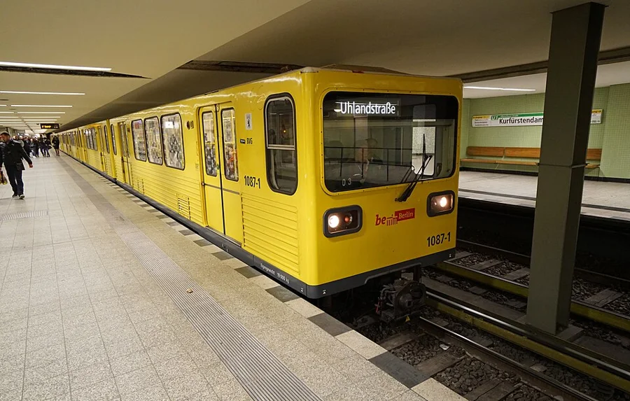
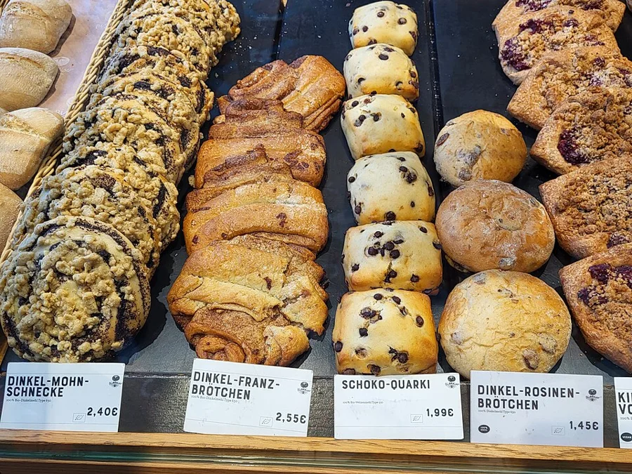
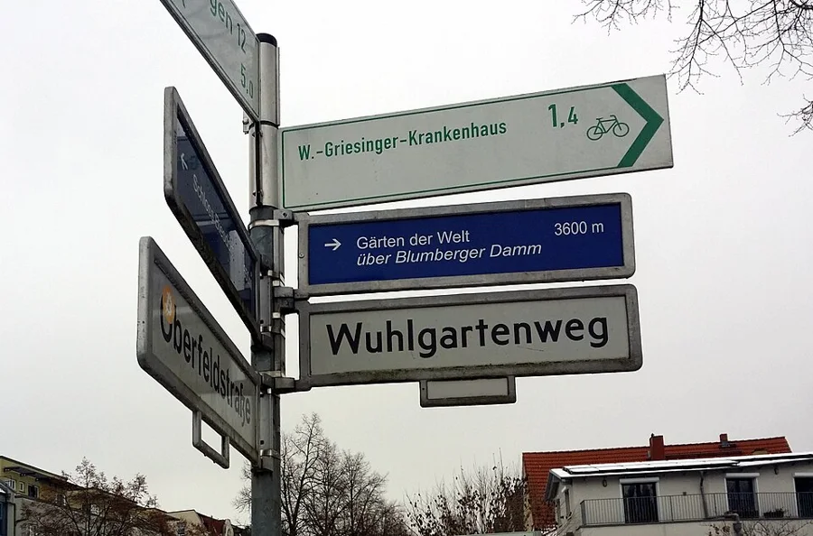
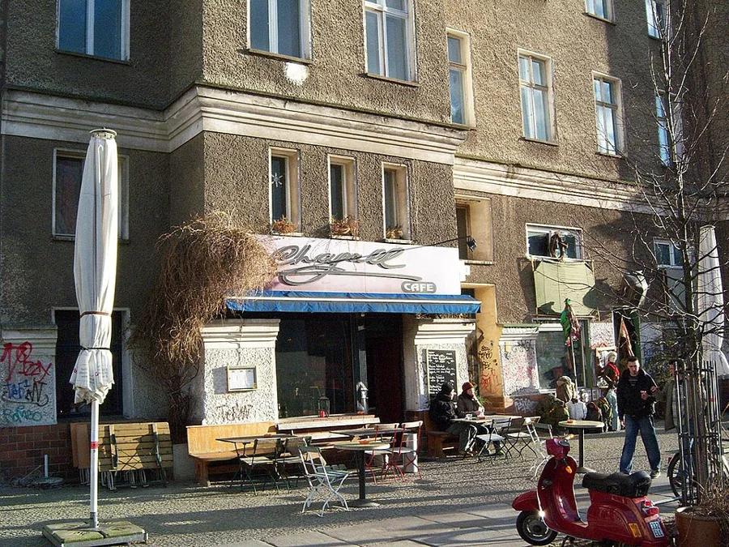
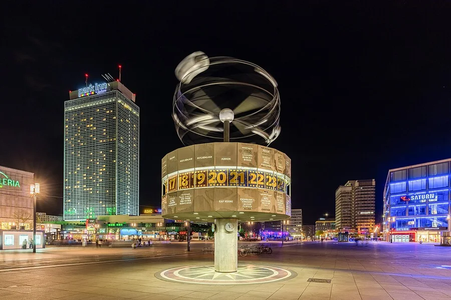

Ein Einzelfahrschein, bitte.
Один разовый билет, пожалуйста.
Первое утро. На кассе метро нужен один билет, а сзади уже очередь.
Что помогло. Слова с аудио и транскрипцией: произношение услышал заранее, а не впервые на кассе.
Закажешь кофе и Schrippe, купишь билет в U-Bahn, спросишь дорогу и поймёшь цену. Слова разложены по местам города, к ним готовые фразы.
Кодовое слово из ролика: БЕРЛИН
Сцена-пример: пять дней и пять фраз с этой страницы. На каждом шаге — что из платформы помогает.

Ein Einzelfahrschein, bitte.
Один разовый билет, пожалуйста.
Первое утро. На кассе метро нужен один билет, а сзади уже очередь.
Что помогло. Слова с аудио и транскрипцией: произношение услышал заранее, а не впервые на кассе.

Zwei Schrippen zum Mitnehmen, bitte.
Две булочки с собой, пожалуйста.
Продавщица спрашивает «Hier oder zum Mitnehmen?», и ответ уже готов.
Что помогло. Лексика по ситуациям: в разделе «Еда» есть кафе, еда на вынос, доставка и булочная.

Wie komme ich zum Alexanderplatz?
Как пройти к Александерплац?
Мобильный интернет кончился, карта не грузится. Спрашиваешь дорогу и понимаешь ответ: geradeaus, dann links.
Что помогло. Платформа в Notion работает офлайн: темы открываются в приложении на телефоне и без интернета.

Noch einmal, bitte. Langsamer, bitte.
Ещё раз, пожалуйста. Помедленнее.
Официант говорит быстро. Ты не теряешься: просишь повторить и сказать медленнее.
Что помогло. Интервальные повторения: карточки слов возвращаются в нужный день, и фразы первого дня не забылись к пятому.

Schönes Wochenende! — Danke, gleichfalls!
Хороших выходных! — Спасибо, и вам!
Неделя позади, короткий разговор уже не пугает. Остаётся вопрос, что учить дальше.
Что помогло. Темы по порядку от A0 до C1: открываешь следующую, а «Прогресс по темам» показывает, что уже пройдено.
Эти 150 слов — первый шаг. Внутри Stellas 340+ гайдов от A0 до C1 и 7500+ слов с аудио.
20 слов темы дели на два дня, бонусные 10 — на один. Каждое вслух.
Ставь слово в готовую фразу: Zwei Schrippen, bitte. Wo ist die U-Bahn?
В конце короткий тест. Ошибся — повтори тему ещё раз.
Покупки, транспорт и время — темы уровня A1: такие слова встречаются в заданиях экзамена A1. В платформе отдельный блок по экзаменам: формат, типичные ошибки, шаблоны писем и устной части.
«Мои ошибки» собирает вопросы, на которых ты ошибся, чтобы повторить их перед экзаменом.
Весь немецкий в переводчике: пока набираешь фразу, автобус ушёл, а продавец спросил второй раз. В Stellas слова и фразы для кафе, транспорта и города с аудио и транскрипцией: выучил заранее — и говоришь сам, без телефона в руке.
Stellas — все темы в одном месте, по порядку от A0 до C1: 340+ гайдов, в каждом объяснение, видео, упражнение и ответы.
Один платёж, доступ навсегда, обновления бесплатно.


Нет, почти все слова работают по всей Германии. Берлинские — Schrippe, Späti, Bulette, Pfannkuchen — помечены в переводе.
От артикля зависят окончания: einen Kaffee, eine Schrippe, ein Wasser. Учи слово сразу с ним.
По 10. Весь список — это 15 дней, если повторять вчерашнюю десятку перед новой.
Скажи «Noch einmal, bitte» или «Langsamer, bitte»: тебе повторят и скажут медленнее.